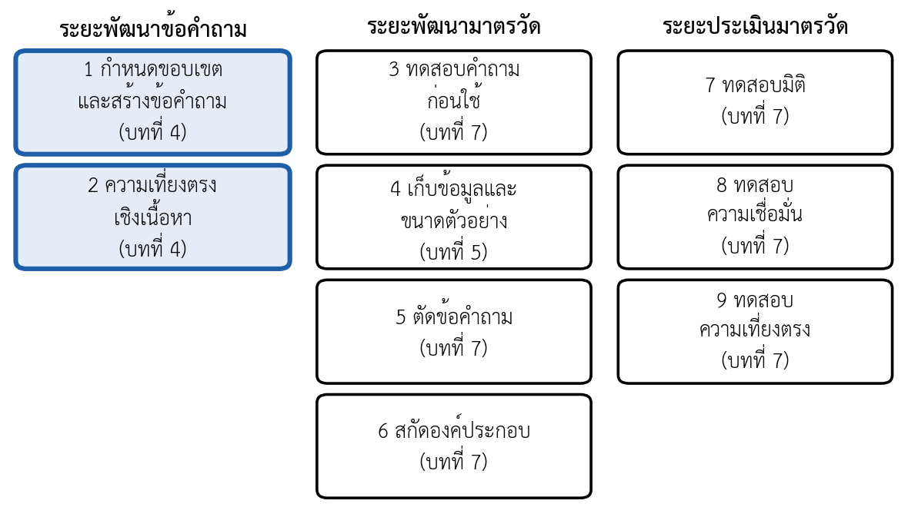
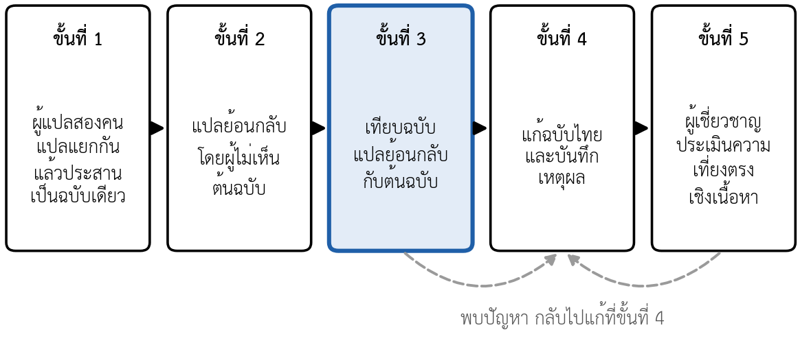

บทที่ 4 นิยามตัวแปร เลือกมาตรวัด และแปลมาตรวัด
เมื่อศึกษาบทนี้จบแล้ว นิสิตสามารถ
- อธิบายลำดับการพัฒนามาตรวัดสามระยะเก้าขั้น และระบุว่าขั้นใดเกี่ยวข้องกับงานของตนได้
- เขียนขอบเขตของแนวคิดและนิยามเชิงปฏิบัติการของตัวแปรทุกตัวในแผนภาพเชิงสาเหตุได้
- ตรวจข้อคำถามที่ตนเขียนหรือเลือกมา และระบุข้อที่ถามสองเรื่องในข้อเดียวได้
- อธิบายข้อจำกัดของตัวแทนจากข้อมูลเอกสาร และเขียนเหตุผลของตัวแทนที่ตนเลือกได้
- จัดทำตารางนิยามเชิงปฏิบัติการ และแผนแปลและตรวจความเที่ยงตรงเชิงเนื้อหาของโครงการตนเองได้ (ใบงานที่ 4)
ความนำ
บทที่ 2 กำหนดนิยามเชิงแนวคิดและนิยามเชิงปฏิบัติการอย่างย่อของตัวแปรหลัก และบทที่ 3 นำรายการตัวแปรไปเขียนเป็นข้อ 2 ของแผนลงทะเบียน บทนี้ขยายข้อ 2 ให้ละเอียดพอสำหรับการเก็บข้อมูลจริง คำถามหลักของบทคือ ตัวเลขที่นิสิตจะได้จากแบบสอบถามหรือจากฐานข้อมูล วัดแนวคิดที่นิสิตตั้งใจวัดจริงหรือไม่
ปัญหาการวัดแก้ย้อนหลังได้ยากที่สุดในกระบวนการวิจัย ถ้ามาตรวัดไม่ตรงแนวคิด การวิเคราะห์ที่ดีเพียงใดก็ตอบคำถามวิจัยไม่ได้ นิสิตที่พบปัญหานี้หลังเก็บข้อมูลแล้ว มีทางเลือกเพียงเก็บใหม่หรือเปลี่ยนคำถาม ดังนั้นเวลาที่ใช้ในบทนี้จึงคุ้มค่ากว่าเวลาเท่ากันที่ใช้แก้ปัญหาในขั้นวิเคราะห์
บทนี้เริ่มจากลำดับการพัฒนามาตรวัดสามระยะเก้าขั้น แล้วลงรายละเอียดสองขั้นแรก คือการกำหนดขอบเขตของแนวคิดและการสร้างหรือเลือกข้อคำถาม กับความเที่ยงตรงเชิงเนื้อหา ระหว่างนั้นกล่าวถึงตัวแปรจากข้อมูลเอกสารสำหรับนิสิตที่ใช้ข้อมูลทุติยภูมิ และการแปลมาตรวัดภาษาต่างประเทศ ท้ายบทเป็นกรณีศึกษาเดินเรื่องของปริมและธามต่อจากบทที่ 3
4.1 ลำดับการพัฒนามาตรวัด
Boateng และคณะ (2018, p. 1) เสนอว่าการพัฒนาและตรวจมาตรวัด (scale) มีสามระยะ เก้าขั้น ระยะพัฒนาข้อคำถาม (item development) มีสองขั้น คือ กำหนดขอบเขตและสร้างข้อคำถาม กับตรวจความเที่ยงตรงเชิงเนื้อหา (Boateng et al., 2018, p. 3 ตาราง 1) ระยะพัฒนามาตรวัด (scale development) มีสี่ขั้น คือ ทดสอบคำถามก่อนใช้ เก็บข้อมูลและกำหนดขนาดตัวอย่าง ตัดข้อคำถาม และสกัดองค์ประกอบ (Boateng et al., 2018, pp. 3–4 ตาราง 1) ระยะประเมินมาตรวัด (scale evaluation) มีสามขั้น คือ ทดสอบมิติ ทดสอบความเชื่อมั่น และทดสอบความเที่ยงตรง (Boateng et al., 2018, p. 4 ตาราง 1)
ภาพที่ 4.1 แสดงเก้าขั้นและบทในเอกสารนี้ที่กล่าวถึงแต่ละขั้น

ที่มา ผู้เขียนวาดจาก Boateng et al. (2018, pp. 3–4 ตาราง 1) การจับคู่ขั้นกับบทเป็นของผู้เขียน กรอบสีน้ำเงินคือขั้นที่กล่าวถึงในบทนี้
4.1.1 นิสิตส่วนใหญ่ไม่ได้ทำครบเก้าขั้น
ผู้เขียนเสนอให้แยกงานเป็นสองระดับ นิสิตปริญญาโทส่วนใหญ่ใช้มาตรวัดที่มีอยู่แล้วและแปลเป็นภาษาไทย จึงทำเก้าขั้นแบบย่อ ได้แก่ ตรวจว่ามาตรวัดตรงขอบเขตของแนวคิด แปล ตรวจความเที่ยงตรงเชิงเนื้อหา ทดลองใช้ และตรวจมิติ ความเชื่อมั่น และความเที่ยงตรงในข้อมูลจริง ส่วนนิสิตปริญญาเอกที่พัฒนามาตรวัดใหม่ หรือปรับมาตรวัดเดิมมาก ต้องทำครบทุกขั้น และควรวางแผนเก็บข้อมูลสองรอบ รอบแรกใช้พัฒนามาตรวัด รอบที่สองใช้ทดสอบสมมติฐาน
4.2 กำหนดขอบเขตของแนวคิด
ขั้นแรกของการพัฒนามาตรวัดคือการกำหนดขอบเขตของแนวคิด (domain) ก่อนเขียนหรือเลือกข้อคำถาม (Boateng et al., 2018, p. 3 ตาราง 1) ขอบเขตบอกว่าแนวคิดครอบคลุมอะไร และไม่ครอบคลุมอะไร ตัวอย่างเช่น ถ้าปริมนิยาม "การใช้เครื่องมือ AI ในงาน" ปริมต้องตัดสินว่ารวมการใช้เพื่อเรื่องส่วนตัวในเวลางานหรือไม่ รวมระบบอัตโนมัติที่องค์การติดตั้งให้โดยพนักงานไม่ได้เลือกเองหรือไม่ และวัดความถี่ ความหลากหลายของงานที่ใช้ หรือความลึกของการใช้
ผู้เขียนเสนอให้เขียนขอบเขตเป็นสามส่วน ได้แก่ นิยามเชิงแนวคิดหนึ่งประโยค รายการสิ่งที่รวม และรายการสิ่งที่ไม่รวม เมื่อเขียนเสร็จ ให้ตรวจกับแผนภาพเชิงสาเหตุในบทที่ 2 ว่าขอบเขตยังตรงกับตำแหน่งของตัวแปรในแผนภาพ ถ้าขอบเขตกว้างจนรวมตัวกลางหรือตัวแปรกวนเข้ามา เช่น นิยามการใช้เครื่องมือ AI ให้รวม "การรู้สึกว่างานเบาลง" ซึ่งเป็นตัวกลางในแผนภาพของปริม ตัวแปรสองตัวจะวัดซ้อนกัน และการวิเคราะห์จะแยกผลไม่ได้
4.3 เลือกมาตรวัดที่มีอยู่ก่อนสร้างใหม่
ผู้เขียนเสนอให้นิสิตค้นมาตรวัดที่ตีพิมพ์และผ่านการตรวจแล้วก่อน และสร้างใหม่เฉพาะเมื่อไม่มีมาตรวัดที่ตรงขอบเขตของแนวคิด เหตุผลมีสามข้อ ข้อแรก มาตรวัดที่ตีพิมพ์ผ่านขั้นในระยะพัฒนาและระยะประเมินมาแล้วอย่างน้อยหนึ่งครั้ง ข้อที่สอง ผลของนิสิตจะเทียบกับงานก่อนหน้าได้ ข้อที่สาม การสร้างมาตรวัดใหม่ที่ทำครบเก้าขั้นเป็นงานขนาดวิทยานิพนธ์อีกเล่มหนึ่ง
เมื่อพบมาตรวัดหลายชุด ผู้เขียนเสนอเกณฑ์เลือกในตารางที่ 4.1 เกณฑ์ข้อแรกสำคัญที่สุด มาตรวัดที่ถูกอ้างมากแต่วัดขอบเขตต่างจากที่นิสิตนิยาม ไม่ใช่มาตรวัดที่ดีสำหรับงานของนิสิต
ตารางที่ 4.1 เกณฑ์เลือกมาตรวัดที่มีอยู่ (ผู้เขียนเสนอ)
| เกณฑ์ | คำถามที่ต้องตอบ | แหล่งหลักฐาน |
|---|---|---|
| ความตรงกับขอบเขต | ข้อคำถามครอบคลุมสิ่งที่รวม และไม่รวมสิ่งที่ไม่รวมตามหัวข้อ 4.2 หรือไม่ | ข้อคำถามต้นฉบับทุกข้อ |
| หลักฐานการตรวจ | ผู้พัฒนารายงานมิติ ความเชื่อมั่น และความเที่ยงตรงหรือไม่ | บทความที่พัฒนามาตรวัด |
| บริบทของกลุ่มตัวอย่าง | เคยใช้กับกลุ่มคล้ายกลุ่มของนิสิตหรือไม่ | บทความที่นำไปใช้ |
| ความยาว | จำนวนข้อเหมาะกับความยาวรวมของแบบสอบถามหรือไม่ | ข้อคำถามต้นฉบับ |
| สิทธิ์การใช้ | ต้องขออนุญาตหรือเสียค่าใช้จ่ายหรือไม่ | ผู้พัฒนาหรือสำนักพิมพ์ |
| ฉบับภาษาไทย | มีฉบับแปลที่ตรวจแล้วหรือไม่ | งานวิจัยในประเทศ |
4.3.1 ชนิดของตัวชี้วัด
ข้อคำถามแต่ละข้อเป็นตัวชี้วัด (indicator) ของแนวคิด ความสัมพันธ์ระหว่างตัวชี้วัดกับแนวคิดมีสองแบบที่ใช้กันมาก คือ แบบสะท้อน (reflective) และแบบก่อรูป (formative) การเลือกแบบผิดทำให้วิธีตรวจความเชื่อมั่นและความเที่ยงตรงในบทที่ 7 ผิดตามไปด้วย Jarvis และคณะ (2003) แยกโมเดลการวัดสองแบบนี้ เสนอเกณฑ์เชิงแนวคิดสำหรับตัดสินว่าแนวคิดใดควรใช้ตัวชี้วัดแบบใด และใช้การจำลองแสดงว่าการกำหนดแบบผิดทำให้ค่าประมาณความสัมพันธ์ระหว่างแนวคิดเอนเอียง ในทางปฏิบัติให้นิสิตบันทึกชนิดที่ผู้พัฒนามาตรวัดระบุไว้ในตารางนิยามเชิงปฏิบัติการ ถ้าผู้พัฒนาไม่ได้ระบุ ให้เขียนว่าไม่ได้ระบุ แล้วปรึกษาอาจารย์ที่ปรึกษา
4.3.2 ตารางนิยามเชิงปฏิบัติการ
ผลของหัวข้อ 4.2 และ 4.3 คือตารางนิยามเชิงปฏิบัติการ (operationalization table) ตามแม่แบบในตารางที่ 4.2 ตารางนี้ขยายตารางคำถามสู่ตัวแปรในบทที่ 2 ให้ลงถึงระดับข้อคำถาม ตัวอย่างในตารางเป็นของปริม
ตารางที่ 4.2 แม่แบบตารางนิยามเชิงปฏิบัติการ พร้อมตัวอย่างของปริม (กรณีศึกษาสมมติ)
| คอลัมน์ | ความผูกพันในงาน | การใช้เครื่องมือ AI ในงาน |
|---|---|---|
| บทบาทในแผนภาพ | ตัวแปรตาม | ตัวแปรต้น |
| นิยามเชิงแนวคิด | ตามนิยามของผู้พัฒนามาตรวัดที่เลือก | ความถี่และความหลากหลายของงานที่พนักงานใช้เครื่องมือ AI ช่วยทำ ในงานตามหน้าที่ |
| สิ่งที่ไม่รวม | ความพึงพอใจในงาน | การใช้เรื่องส่วนตัว และระบบอัตโนมัติที่พนักงานไม่ได้เลือกใช้เอง |
| ชนิดตัวชี้วัด | ตามที่ผู้พัฒนาระบุ | ยังไม่ได้ตัดสิน |
| จำนวนข้อ | ตามมาตรวัดต้นฉบับ | 6 ข้อ (ปริมเขียนเอง) |
| แหล่งมาตรวัด | บทความที่พัฒนามาตรวัด | สร้างใหม่ เหตุผลคือไม่พบมาตรวัดที่ตรงขอบเขต |
| สเกล | ตามมาตรวัดต้นฉบับ | ระบุจำนวนระดับและป้ายของทุกระดับ |
| ข้อกลับทิศ | ตามมาตรวัดต้นฉบับ | ระบุเลขข้อ |
| ภาษาต้นฉบับและฉบับแปล | อังกฤษ แปลตามหัวข้อ 4.6 | ไทย ไม่ต้องแปล |
ที่มา ผู้เขียนจัดทำแม่แบบ ตัวอย่างมาจากกรณีศึกษาสมมติ
4.4 เขียนข้อคำถามเมื่อต้องสร้างเอง
เมื่อไม่มีมาตรวัดที่ตรงขอบเขต นิสิตต้องเขียนข้อคำถามเอง ผู้เขียนเสนอหลักตรวจข้อคำถามห้าข้อในตารางที่ 4.3 หลักเหล่านี้ใช้ตรวจข้อคำถามที่แปลมาได้ด้วย เพราะการแปลอาจทำให้ข้อที่ดีในภาษาต้นฉบับกลายเป็นข้อที่กำกวมในภาษาไทย
ตารางที่ 4.3 หลักตรวจข้อคำถาม (ผู้เขียนเสนอ)
| หลัก | ข้อคำถามที่มีปัญหา | ข้อคำถามที่แก้แล้ว |
|---|---|---|
| ถามเรื่องเดียว | ฉันใช้เครื่องมือ AI บ่อยและรู้สึกว่าช่วยงานได้มาก | แยกเป็นสองข้อ ข้อหนึ่งถามความถี่ อีกข้อถามการรับรู้ประโยชน์ |
| ใช้คำที่ผู้ตอบเข้าใจตรงกัน | ฉันใช้ AI ในงาน | ระบุตัวอย่างเครื่องมือหรือนิยามคำว่าเครื่องมือ AI ไว้ก่อนชุดข้อคำถาม |
| อยู่ในขอบเขตของแนวคิด | ฉันรู้สึกว่างานเบาลงเมื่อใช้เครื่องมือ AI | ย้ายไปวัดในตัวแปรภาระงานที่รับรู้ ถ้าอยู่ในแผนภาพ |
| ไม่ชี้นำคำตอบ | เครื่องมือ AI ช่วยให้คุณทำงานได้ดีขึ้นมากเพียงใด | ใช้ถ้อยคำกลางที่ไม่บอกทิศทาง |
| กรอบเวลาชัด | ฉันใช้เครื่องมือ AI เป็นประจำ | ใช้กรอบเวลา เช่น ในสี่สัปดาห์ที่ผ่านมา |
ที่มา ผู้เขียนจัดทำ ตัวอย่างมาจากกรณีศึกษาสมมติ
หลักข้อที่สามป้องกันปัญหาที่พบตอนวิเคราะห์ เมื่อข้อคำถามของสองตัวแปรมีความหมายซ้อนกัน ค่าความเที่ยงตรงเชิงจำแนกจะต่ำ และนิสิตจะแยกสองแนวคิดออกจากกันไม่ได้ วิธีตรวจในขั้นวิเคราะห์อยู่ในบทที่ 7 แต่ทางแก้ที่ดีที่สุดคือป้องกันตั้งแต่ขั้นนี้
4.5 ตัวแปรจากข้อมูลเอกสาร
นิสิตที่ใช้ข้อมูลทุติยภูมิไม่ได้เขียนข้อคำถาม แต่ต้องเลือกตัวแทน (proxy) จากข้อมูลที่มี เช่น งบการเงิน ข้อมูลสิทธิบัตร หรือรายงานประจำปี ตัวแทนเหล่านี้เรียกว่าตัวแทนจากข้อมูลเอกสาร (archival proxy) Ketchen และคณะ (2013, บทคัดย่อ) ชี้ว่าความตรงเชิงโครงสร้าง (construct validity) ของตัวแทนจากข้อมูลเอกสารยังเป็นข้อกังวล บางกรณีตัวแทนไม่สัมพันธ์ใกล้ชิดกับแนวคิดที่ตั้งใจวัด และตัวแทนสามตัวในงานด้านการจัดการเชิงกลยุทธ์ ได้แก่ ความเข้มข้นของการวิจัยและพัฒนา จำนวนสิทธิบัตร และการอ้างอิงสิทธิบัตร ถูกใช้แทนแนวคิดที่หลากหลาย ทำให้ตีความผลได้ยาก
ประเด็นนี้ตรงกับงานของธาม ความเข้มข้นของการลงทุนวิจัยและพัฒนาเป็นตัวแทนที่ธามใช้เป็นตัวแปรต้น และตัวแทนนี้ถูกใช้แทนแนวคิดหลายแบบในงานก่อนหน้า ผู้เขียนเสนอให้นิสิตที่ใช้ข้อมูลเอกสารเขียนสามเรื่องลงในตารางนิยามเชิงปฏิบัติการ ได้แก่ แนวคิดที่ตัวแทนนี้แทนในงานของตน สูตรคำนวณที่ใช้พร้อมเหตุผลที่เลือกตัวหาร และส่วนของแนวคิดที่ตัวแทนนี้ไม่ได้วัด ส่วนสุดท้ายจะกลายเป็นย่อหน้าข้อจำกัดในบทความ
ทางเลือกของสูตรคำนวณเป็นความยืดหยุ่นของผู้วิจัยแบบหนึ่งตามบทที่ 3 ถ้าธามยังตัดสินไม่ได้ว่าจะหารค่าใช้จ่ายวิจัยและพัฒนาด้วยยอดขายหรือด้วยสินทรัพย์รวม ธามต้องเลือกสูตรหลักไว้ในแผนลงทะเบียน และระบุสูตรอื่นเป็นการวิเคราะห์ความทนทาน ไม่ใช่ลองทั้งสองสูตรแล้วรายงานสูตรที่ให้ผลดีกว่า
4.6 แปลมาตรวัด
มาตรวัดที่ใช้ในงานวิจัยบริหารธุรกิจส่วนใหญ่พัฒนาเป็นภาษาอังกฤษ การแปลเป็นภาษาไทยไม่ใช่งานภาษาอย่างเดียว เป้าหมายคือให้ฉบับไทยวัดแนวคิดเดียวกับต้นฉบับ แนวปฏิบัติของ International Test Commission (2018) กำหนดให้ใช้ผู้แปลไม่น้อยกว่าสองคน เพราะผู้แปลคนเดียวไม่เพียงพอ (แนวปฏิบัติ TD-1) และชี้ว่าการแปลไปข้างหน้าอย่างเดียวหรือการแปลย้อนกลับอย่างเดียวมีจุดอ่อน จึงแนะนำให้แปลสองฉบับแยกกันแล้วประสานเป็นฉบับเดียว (แนวปฏิบัติ TD-2) ผู้เขียนเสนอขั้นตอนห้าขั้นในภาพที่ 4.2 ซึ่งให้ผู้แปลสองคนแปลแยกกันในขั้นที่ 1 แล้วใช้การแปลย้อนกลับเป็นการตรวจเพิ่ม และให้บันทึกผลทุกข้อในแบบบันทึกการแปลตามตารางที่ 4.4

ที่มา ผู้เขียนจัดทำ ขั้นที่ 5 ใช้หลักจาก Boateng et al. (2018, p. 3 ตาราง 1)
ขั้นที่สำคัญที่สุดคือขั้นที่ 3 การเทียบฉบับแปลย้อนกลับกับต้นฉบับ ผู้แปลย้อนกลับต้องไม่เห็นต้นฉบับ ข้อที่ความหมายเปลี่ยนจะเห็นได้จากฉบับแปลย้อนกลับ แม้ฉบับไทยจะอ่านลื่น ข้อที่แก้ในขั้นที่ 4 ต้องบันทึกเหตุผลทุกข้อ เพราะผู้ประเมินบทความมักถามว่าฉบับไทยต่างจากต้นฉบับอย่างไร
ตารางที่ 4.4 แบบบันทึกการแปล (ผู้เขียนเสนอ)
| ข้อ | ต้นฉบับ | ฉบับแปล | ฉบับแปลย้อนกลับ | ความต่างที่พบ | การแก้และเหตุผล |
|---|---|---|---|---|---|
| 1 | |||||
| 2 |
4.7 ความเที่ยงตรงเชิงเนื้อหา
ความเที่ยงตรงเชิงเนื้อหา (content validity) เป็นขั้นที่ 2 ของการพัฒนามาตรวัด ใช้ตรวจว่าข้อคำถามวัดขอบเขตของแนวคิดครบหรือไม่ (Boateng et al., 2018, p. 3 ตาราง 1) ในทางปฏิบัติ นิสิตส่งขอบเขตของแนวคิดจากหัวข้อ 4.2 พร้อมข้อคำถามให้ผู้เชี่ยวชาญประเมินทีละข้อว่าวัดแนวคิดตรงหรือไม่ และขอบเขตส่วนใดยังไม่มีข้อคำถามวัด
นิสิตอาจพบดัชนีความสอดคล้องระหว่างข้อคำถามกับวัตถุประสงค์ (index of item-objective congruence หรือ IOC) ในงานวิจัยที่อ่าน ดัชนีนี้มาจาก Rovinelli และ Hambleton (1976) ผู้เชี่ยวชาญให้คะแนนข้อคำถามแต่ละข้อเทียบกับวัตถุประสงค์แต่ละข้อเป็น 1 เมื่อแน่ใจว่าข้อนั้นวัดวัตถุประสงค์นั้น 0 เมื่อไม่แน่ใจ และ -1 เมื่อแน่ใจว่าไม่ได้วัด (pp. 11–12) ดัชนีมีค่าตั้งแต่ -1 ถึง 1 (p. 13) ผู้พัฒนาดัชนีไม่ได้กำหนดเกณฑ์ตัดสินตายตัว ค่า .50 ในบทความเป็นตัวอย่างประกอบการตีความ และดัชนีนี้ไม่มีการทดสอบนัยสำคัญ (Rovinelli & Hambleton, 1976, pp. 13–14) ถ้างานที่อ่านใช้เกณฑ์ .50 นิสิตจึงควรเข้าใจว่าเป็นเกณฑ์ที่ผู้วิจัยเลือก ไม่ใช่เกณฑ์ที่ผู้พัฒนาดัชนีกำหนด ผู้เขียนเสนอหลักสองข้อที่ใช้ได้ไม่ว่าจะใช้ดัชนีใด ข้อแรก ส่งขอบเขตของแนวคิดให้ผู้เชี่ยวชาญพร้อมข้อคำถาม ถ้าส่งแต่ข้อคำถาม ผู้เชี่ยวชาญจะประเมินจากความเข้าใจของตนเองว่าแนวคิดคืออะไร ข้อที่สอง เก็บความเห็นปลายเปิดของผู้เชี่ยวชาญไว้ด้วย เพราะคะแนนบอกว่าข้อใดมีปัญหา แต่ความเห็นบอกว่าปัญหาคืออะไร
4.8 ข้อผิดพลาดที่พบบ่อย
ตารางที่ 4.5 ข้อผิดพลาดที่พบบ่อยและวิธีแก้
| ข้อผิดพลาด | ตัวอย่าง | วิธีแก้ |
|---|---|---|
| สร้างข้อคำถามใหม่ทั้งที่มีมาตรวัดที่ผ่านการตรวจแล้ว | เขียนข้อคำถามความผูกพันในงานเอง | ค้นมาตรวัดที่ตีพิมพ์ก่อนตามตารางที่ 4.1 (ผู้เขียนเสนอ) |
| เลือกมาตรวัดโดยไม่ตรวจขอบเขต | เลือกชุดที่ถูกอ้างมากที่สุด | เทียบข้อคำถามกับขอบเขตตามหัวข้อ 4.2 (Boateng et al., 2018, p. 3) |
| ข้อคำถามถามสองเรื่อง | ใช้บ่อยและรู้สึกว่าช่วยงาน | แยกเป็นสองข้อตามตารางที่ 4.3 |
| ข้อคำถามของสองตัวแปรความหมายซ้อนกัน | ข้อคำถามของตัวแปรต้นวัดตัวกลางไปด้วย | ตรวจกับแผนภาพในบทที่ 2 ตั้งแต่ขั้นเขียนข้อ |
| ใช้ตัวแทนจากข้อมูลเอกสารโดยไม่อธิบาย | ใช้ความเข้มข้นของการวิจัยและพัฒนาโดยไม่บอกว่าแทนแนวคิดใด | เขียนแนวคิดที่แทน สูตร และส่วนที่ไม่ได้วัด (Ketchen et al., 2013, บทคัดย่อ) |
| แปลคนเดียวโดยไม่แปลย้อนกลับ | ฉบับไทยอ่านลื่นแต่ความหมายเปลี่ยน | ทำตามขั้นตอนในภาพที่ 4.2 และบันทึกตามตารางที่ 4.4 |
| ส่งข้อคำถามให้ผู้เชี่ยวชาญโดยไม่ส่งขอบเขต | ผู้เชี่ยวชาญประเมินตามความเข้าใจของตนเอง | ส่งขอบเขตของแนวคิดพร้อมข้อคำถาม (ผู้เขียนเสนอ) |
ปริมเลือกมาตรวัดความผูกพันในงานฉบับภาษาอังกฤษที่ตีพิมพ์แล้ว และไม่พบมาตรวัดการใช้เครื่องมือ AI ที่ตรงแนวคิดของตน จึงเขียนข้อคำถามเอง 6 ข้อ ข้อหนึ่งคือ "ฉันใช้เครื่องมือ AI บ่อยและรู้สึกว่าช่วยงานได้มาก" ปริมแปลมาตรวัดความผูกพันในงานเองคนเดียว และวางแผนให้อาจารย์ในภาควิชา 3 คนตรวจความเที่ยงตรงเชิงเนื้อหา
ธามยังไม่ได้ตัดสินว่าจะวัดความเข้มข้นของการลงทุนวิจัยและพัฒนาเป็นค่าใช้จ่ายวิจัยและพัฒนาต่อยอดขาย หรือต่อสินทรัพย์รวม และคิดว่าจะลองทั้งสองแบบแล้วดูว่าแบบใดให้ผลชัดกว่า
คำถามชวนคิด ข้อคำถามของปริมข้อที่ยกมามีปัญหาอะไรตามตารางที่ 4.3 และแผนแปลกับแผนตรวจความเที่ยงตรงเชิงเนื้อหาของปริมขาดอะไร ส่วนแผนของธามที่จะลองทั้งสองสูตรเปิดความยืดหยุ่นแบบใดตามบทที่ 3 และธามควรเขียนเรื่องนี้ในแผนลงทะเบียนอย่างไร
เมื่อศึกษาบทนี้แล้ว นิสิตสามารถอธิบายลำดับการพัฒนามาตรวัดสามระยะเก้าขั้น และรู้ว่างานของตนต้องทำขั้นใดแบบเต็มและขั้นใดแบบย่อ นิสิตสามารถกำหนดขอบเขตของแนวคิดเป็นนิยามหนึ่งประโยค สิ่งที่รวม และสิ่งที่ไม่รวม และตรวจขอบเขตกับแผนภาพเชิงสาเหตุไม่ให้ตัวแปรสองตัววัดซ้อนกัน
นิสิตสามารถเลือกมาตรวัดที่มีอยู่ด้วยเกณฑ์ที่เริ่มจากความตรงกับขอบเขต เขียนข้อคำถามใหม่ตามหลักตรวจห้าข้อเมื่อจำเป็น และบันทึกทุกอย่างในตารางนิยามเชิงปฏิบัติการ นิสิตที่ใช้ข้อมูลทุติยภูมิรู้ว่าตัวแทนจากข้อมูลเอกสารอาจไม่ตรงกับแนวคิด จึงต้องเขียนแนวคิดที่แทน สูตร และส่วนที่ไม่ได้วัด นิสิตที่แปลมาตรวัดมีขั้นตอนแปลย้อนกลับและแบบบันทึกการแปล และรู้ว่าการตรวจความเที่ยงตรงเชิงเนื้อหาต้องส่งขอบเขตของแนวคิดให้ผู้เชี่ยวชาญพร้อมข้อคำถาม
ผลของใบงานที่ 4 คือตารางนิยามเชิงปฏิบัติการ และแผนแปลกับแผนตรวจความเที่ยงตรงเชิงเนื้อหา บทที่ 5 จะนำข้อคำถามเหล่านี้ไปจัดเป็นแบบสอบถาม ออกแบบให้ลดความลำเอียงจากวิธีวัดร่วมและป้องกันคำตอบจากบอท และกำหนดขนาดตัวอย่างด้วยการวิเคราะห์กำลังทดสอบ
- มาตรวัด (scale)
- ขอบเขตของแนวคิด (domain)
- ตัวชี้วัด (indicator)
- ตัวชี้วัดแบบสะท้อน (reflective indicator)
- ตัวชี้วัดแบบก่อรูป (formative indicator)
- ตารางนิยามเชิงปฏิบัติการ (operationalization table)
- ตัวแทนจากข้อมูลเอกสาร (archival proxy)
- ความตรงเชิงโครงสร้าง (construct validity)
- การแปลย้อนกลับ (back-translation)
- ความเที่ยงตรงเชิงเนื้อหา (content validity)
- ดัชนีความสอดคล้องระหว่างข้อคำถามกับวัตถุประสงค์ (IOC)
คำถามทบทวน
- จงอธิบายสามระยะของการพัฒนามาตรวัดตาม Boateng และคณะ (2018) และระบุว่าถ้านิสิตใช้มาตรวัดที่มีอยู่แล้วและแปล ขั้นใดยังต้องทำ เพราะเหตุใด
- นิสิตคนหนึ่งเลือกมาตรวัดเพราะ "ถูกอ้างมากที่สุดในฐานข้อมูล" จงประเมินเหตุผลนี้ด้วยเกณฑ์ในตารางที่ 4.1
- จงยกตัวอย่างข้อคำถามที่ถามสองเรื่องจากงานของตนหรือจากงานที่อ่าน แล้วแก้ให้ถูกตามหลักในตารางที่ 4.3
- Ketchen และคณะ (2013) กังวลเรื่องอะไรเกี่ยวกับตัวแทนจากข้อมูลเอกสาร และนิสิตที่ใช้ความเข้มข้นของการวิจัยและพัฒนาเป็นตัวแปรต้นควรเขียนอะไรในตารางนิยามเชิงปฏิบัติการ
- เหตุใดผู้แปลย้อนกลับจึงต้องไม่เห็นต้นฉบับ และเหตุใดจึงต้องส่งขอบเขตของแนวคิดให้ผู้เชี่ยวชาญพร้อมข้อคำถาม
ใบงานที่ 4 ตารางนิยามเชิงปฏิบัติการและแผนแปล
ให้นิสิตแต่ละคนจัดทำเอกสารสำหรับโครงการวิจัยของตนเอง ความยาวไม่เกินสี่หน้ากระดาษ A4 ไม่รวมข้อคำถาม
- ขอบเขตของแนวคิดของตัวแปรหลักทุกตัว เขียนเป็นนิยามหนึ่งประโยค สิ่งที่รวม และสิ่งที่ไม่รวม
- ตารางนิยามเชิงปฏิบัติการตามแม่แบบในตารางที่ 4.2 ครบทุกตัวแปรในแผนภาพเชิงสาเหตุที่วัดได้
- นิสิตที่ใช้มาตรวัดที่มีอยู่ ตารางเกณฑ์เลือกตามตารางที่ 4.1 ของมาตรวัดอย่างน้อยสองชุดที่พิจารณา
- นิสิตที่เขียนข้อคำถามเอง ผลตรวจข้อคำถามตามหลักในตารางที่ 4.3 ทุกข้อ
- นิสิตที่ใช้ข้อมูลเอกสาร แนวคิดที่ตัวแทนแทน สูตรหลัก สูตรสำรองสำหรับการวิเคราะห์ความทนทาน และส่วนที่ไม่ได้วัด
- นิสิตที่แปลมาตรวัด รายชื่อผู้แปลและผู้แปลย้อนกลับ (ระบุคุณสมบัติ ไม่ต้องระบุชื่อ) และแผนตรวจความเที่ยงตรงเชิงเนื้อหา
- ปรับข้อ 2 ของแผนลงทะเบียนในใบงานที่ 3 ให้ตรงกับตารางนิยามเชิงปฏิบัติการ และบันทึกในบันทึกการแก้แผน ถ้าแก้หลังวันที่ลงทะเบียน
เอกสารอ้างอิง
วราวุฒิ นาคบุญนำ. (2569). บทที่ 4 นิยามตัวแปร เลือกมาตรวัด และแปลมาตรวัด. ใน เริ่มต้นทำวิจัย จากคำถามถึงชุดข้อมูลที่วิเคราะห์ได้. คณะการบัญชีและการจัดการ มหาวิทยาลัยมหาสารคาม. https://aj-warawut.github.io/academic-web-teaching/rs_lesson_04.html